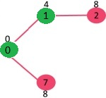
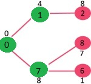
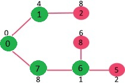
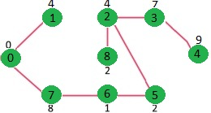

Prims Algorithm
Problem Statement : Prim’s algorithm is a greedy algorithm for finding a minimal spanning tree on a weighted undirected graph using a greedy approach.
Greedy algorithms build solutions incrementally by continually making locally optimal choices as they attempt to find a globally optimal solution to a problem. In the case of Prim’s algorithm, we repeatedly select the vertex whose distance from the source vertex is minimized, i.e., the current locally optimal choice.
Algorithm 1) Create a set mstSet that keeps track of vertices already included in MST. 2) Assign a key value to all vertices in the input graph. Initialize all key values as INFINITE. Assign key value as 0 for the first vertex so that it is picked first. 3) While mstSet doesn’t include all vertices ….a) Pick a vertex u which is not there in mstSet and has minimum key value. ….b) Include u to mstSet. ….c) Update key value of all adjacent vertices of u. To update the key values, iterate through all adjacent vertices. For every adjacent vertex v, if weight of edge u-v is less than the previous key value of v, update the key value as weight of u-v
Let us understand with the following example:

The set mstSet is initially empty and keys assigned to vertices are {0, INF, INF, INF, INF, INF, INF, INF} where INF indicates infinite. Now pick the vertex with minimum key value. The vertex 0 is picked, include it in mstSet.
So mstSet becomes {0}. After including to mstSet, update key values of adjacent vertices. Adjacent vertices of 0 are 1 and 7. The key values of 1 and 7 are updated as 4 and 8. Following subgraph shows vertices and their key values, only the vertices with finite key values are shown.
The vertices included in MST are shown in green color.

Pick the vertex with minimum key value and not already included in MST (not in mstSET). The vertex 1 is picked and added to mstSet. So mstSet now becomes {0, 1}. Update the key values of adjacent vertices of 1. The key value of vertex 2 becomes 8

Pick the vertex with minimum key value and not already included in MST (not in mstSET). We can either pick vertex 7 or vertex 2, let vertex 7 is picked. So mstSet now becomes {0, 1, 7}. Update the key values of adjacent vertices of 7. The key value of vertex 6 and 8 becomes finite (1 and 7 respectively).

Pick the vertex with minimum key value and not already included in MST (not in mstSET). Vertex 6 is picked. So mstSet now becomes {0, 1, 7, 6}. Update the key values of adjacent vertices of 6. The key value of vertex 5 and 8 are updated.

We repeat the above steps until mstSet includes all vertices of given graph. Finally, we get the following graph.
